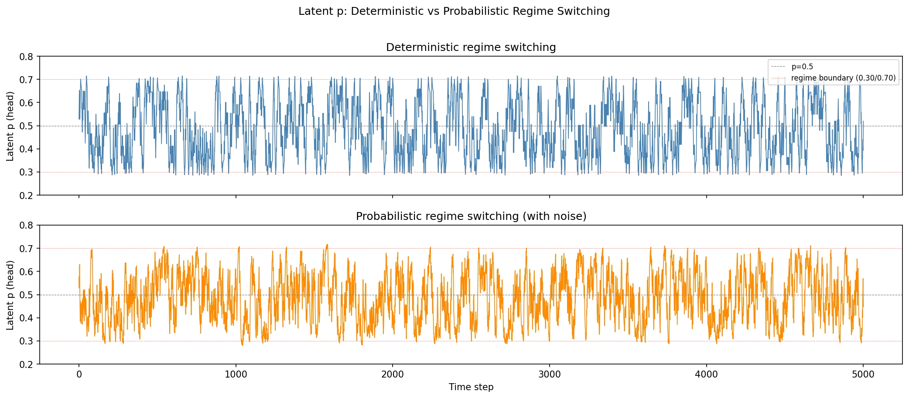
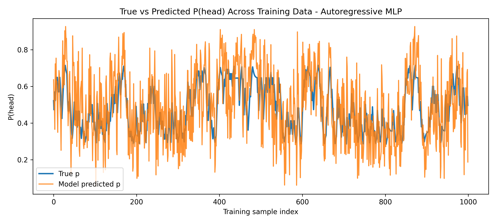
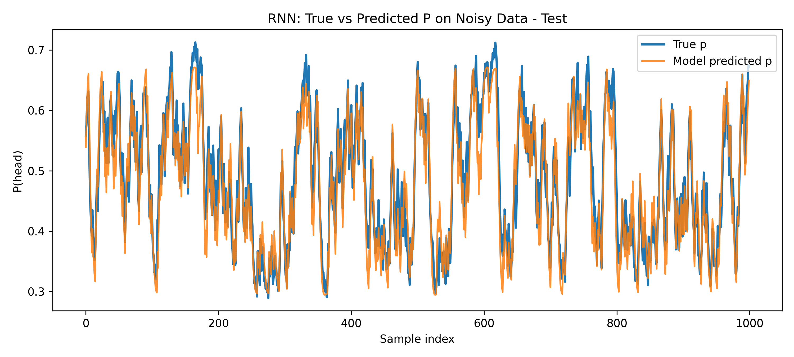
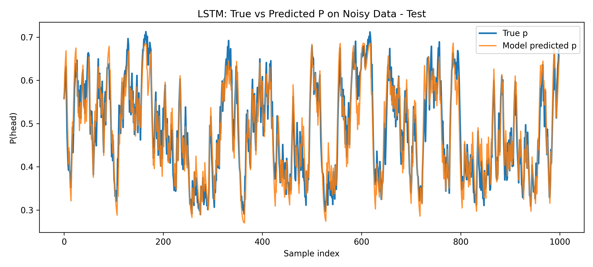
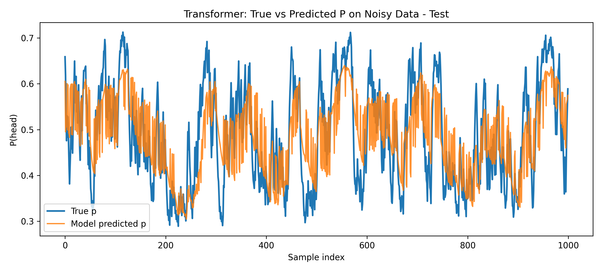
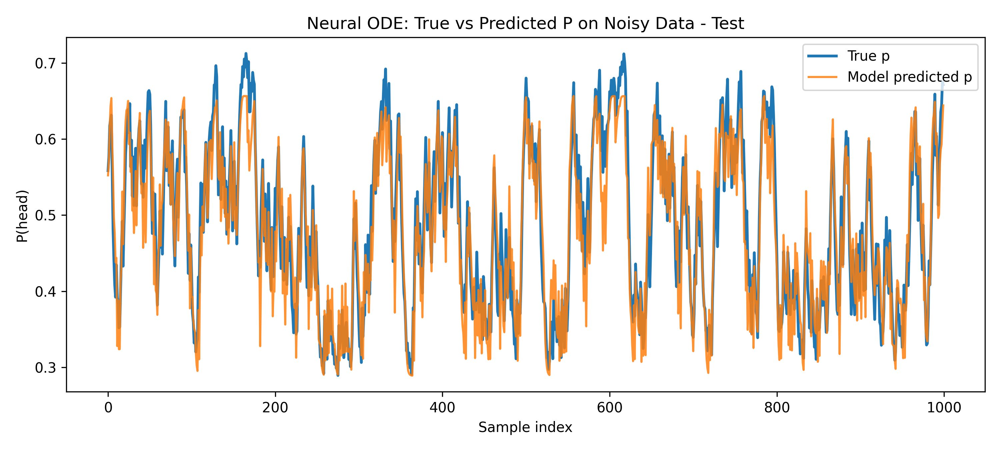
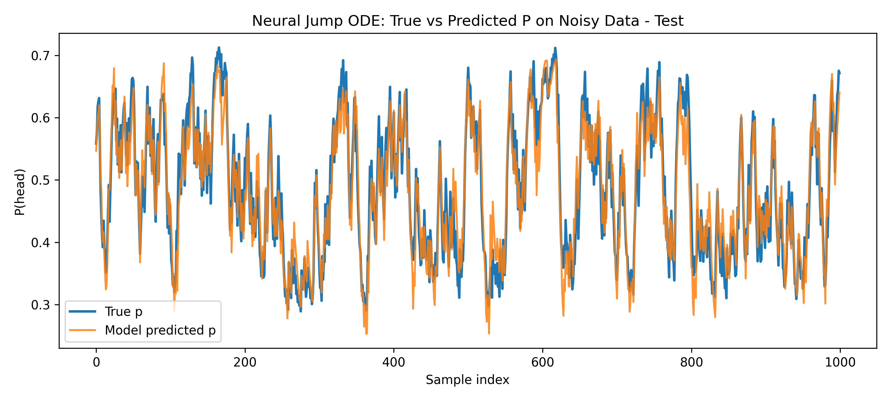
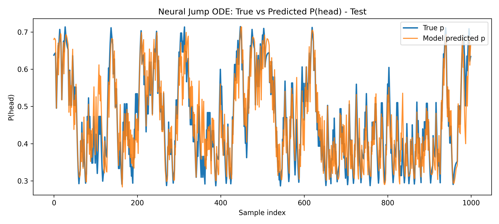

// neural networks final project
Most neural networks are trained once and then frozen — their learned parameters stop changing the moment training ends. That's a problem for the many real systems whose behavior isn't fixed: financial markets, physiological signals, user behavior, and other processes whose statistics drift, shift regimes, or change discontinuously over time.
This project asks a narrower version of that question: given a stochastic process whose underlying probability parameter changes over time, can a neural network recover the true, hidden probability driving it — not just predict the next observed outcome, but reconstruct the latent dynamics themselves? We built two synthetic regime-switching Bernoulli (coin-flip) datasets and trained six architectures — an autoregressive MLP, an RNN, an LSTM, a Transformer, a Neural ODE, and a Neural Jump ODE — to estimate that hidden probability at every timestep, then compared how well each one actually recovered it.
The short version: architectures built to represent temporal structure explicitly — recurrence, continuous latent evolution, and especially explicit handling of discontinuous regime changes — did substantially better than a plain feedforward autoregressive model. The Neural Jump ODE came out on top across every metric we measured.
Rather than using a real-world dataset, we generated synthetic data so that the true latent probability at every timestep would be known exactly — which makes it possible to score each model on how well it recovers the underlying dynamics, not just how well it predicts the next coin flip.
Both datasets are sequences of binary outcomes drawn from a Bernoulli process whose success probability p changes over time via regime switching:
Each model's final sigmoid output at each timestep is treated as its estimate of the latent p, and evaluated against the true generating value.

Six architectures were trained and evaluated on identical train/test splits (n=5000 each), on both the clean and noisy datasets:






The Neural Jump ODE achieved the best score on every metric, on both datasets, with the LSTM a close second. The Transformer underperformed the recurrent and continuous-time models without extensive tuning. Interestingly, every model scored better on the noisy dataset than the clean one — the noisy dataset's smoother, probabilistic transitions turned out to be easier to track than the clean dataset's sharp, deterministic regime switches.
| Model | Clean data | Noisy data | ||||
|---|---|---|---|---|---|---|
| MAE | RMSE | Corr | MAE | RMSE | Corr | |
| MLP | 0.0518 | 0.0658 | 0.8493 | 0.0404 | 0.0506 | 0.8911 |
| RNN | 0.0362 | 0.0472 | 0.9266 | 0.0300 | 0.0374 | 0.9467 |
| LSTM | 0.0340 | 0.0444 | 0.9373 | 0.0268 | 0.0335 | 0.9473 |
| Transformer | 0.0685 | 0.0864 | 0.7207 | 0.0524 | 0.0648 | 0.7725 |
| Neural ODE | 0.0464 | 0.0601 | 0.8827 | 0.0321 | 0.0401 | 0.9291 |
| Neural Jump ODE | 0.0336 | 0.0435 | 0.9374 | 0.0256 | 0.0324 | 0.9521 |

Architectural inductive bias matters for non-stationary processes. Models that explicitly represent temporal memory, continuous latent evolution, or discontinuous regime changes — recurrence, Neural ODEs, and especially the jump mechanism in the Neural Jump ODE — tracked the true dynamics far better than a plain feedforward autoregressive model with a fixed receptive field. The Transformer's relatively weak showing suggests attention alone, without substantial tuning, isn't a natural fit for this kind of task.
The main limitation is scope: this used controlled synthetic Bernoulli processes, not real-world data, so it's an open question how well these findings transfer to higher-dimensional, longer-horizon, or partially observed systems. The full report covers this in more depth, along with an ablation-focused direction for future work and a discussion of the ethical considerations that come with applying these architectures (finance, healthcare, behavioral prediction) to systems where mis-modeled non-stationarity has real consequences.
Each model was trained and evaluated in its own notebook, all built on a shared toy-data generation package.
The toy_data/ folder contains the shared data-generation package
(generation.py, adapters.py, plotting.py) and the
pre-generated train/test JSON files each notebook loads.